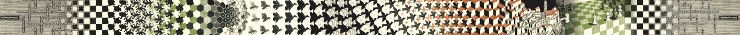

Problem Sequence:
Calculating a scaling limit for partial sums of the exponential
series
On this page are 21 problems. By solving these problems, the reader
will be guided through a fairly technical calculation involving the
partial sums of the exponential series.
Starting from scratch, we will derive a scaling limit which gives
precise information about the locations of the zeros of the partial
sums. Along the way the reader will perform a complete application
of the saddle point method and derive the equation of the famous
Szegő curve.
Our main result
here originally appeared (without proof) as Lemma 2 in my last post. The purpose of this
problem sequence is to outline its proof.
A blue superscript# will indicate that
there are relevant papers or books the interested reader might like
to see.
1 Definitions
2 The saddle point method
3 Choosing the right
contour
4 Applying the method
4.1 Some notation
4.2 Estimating the parts of the integral
5 The zeros of $p_{n-1}(nz)$
and the Szegő curve
6 How quickly do the zeros
approach the Szegő curve?
7 The scaling limit
Appendix: Using the scaling limit (Why uniformity?)
Appendix: Further reading
1
Definitions
Let
\[ p_n(z) = \sum_{k=0}^{n} \frac{z^k}{k!}. \tag{1.1} \]
This polynomial $p_n(z)$ is commonly referred to as the nth partial sum of
the exponential series or the nth Taylor polynomial of the exponential
function.
Problem 1.
Let $\gamma$ be a simple closed loop around the origin with
positive orientation. Show that \[ \frac{e^z -
p_{n-1}(z)}{z^n} = \frac{1}{2\pi i} \int_\gamma \zeta^{-n}
e^\zeta \,\frac{d\zeta}{\zeta-z} \] for all nonzero $z$ inside
$\gamma$. Then make a change of variables to show that
\[ \frac{e^{nz} - p_{n-1}(nz)}{(ez)^n} =
\frac{1}{2\pi i} \int_\gamma (es)^{-n} e^{ns}
\,\frac{ds}{s-z} \tag{1.2} \]
for all nonzero $z$ inside $\gamma$.
1
Hint: Show that \[
\int_{\gamma} \zeta^{-m} \,\frac{d\zeta}{\zeta - z} = 0 \] for
all integers $m \geq 1$.
The precise nature of the contour $\gamma$ will be determined in Section 3.
Define $\varphi(s) = s-1-\log s$, taking the principal branch of the
natural logarithm, so that \[ (es)^{-n} e^{ns} = \exp\{n(s-1-\log
s)\} = \exp\{n\varphi(s)\}. \]
2
The saddle point method
The saddle point method (also known as the method of steepest descent)2 is a rigorous
application of a simple idea: the size of something is roughly equal
to the size of its biggest parts. The something
here is an
integral, and its size will be roughly equal to the integral over
neighborhoods of the maxima of its integrand. Of course we are
interested in contour integrals in the complex plane, so we need to
define what we mean by maxima
in this context.
Suppose we have an integral of the form \[ F(n) = \int_\gamma
\exp\{n f(s)\}\,ds = \int_\gamma \exp\{n \operatorname{Re} f(s)\}
\exp\{in \operatorname{Im} f(s)\}\,ds, \qquad n > 0. \] The size
of the integrand is \[ \lvert \exp\{n f(s)\} \rvert = \exp\{n
\operatorname{Re} f(s)\}, \] and this is largest where
$\operatorname{Re} f(s)$ is largest. However, because $F(n)$ is an
integral of a complex-valued function, if we integrate over a
generic contour $\gamma$ then the final size of the integral may be
sensitive to cancellation or resonance coming from the oscillatory
factor $\exp\{in \operatorname{Im} f(s)\}$. The main plan, then, is
to deform the contour in such a way that the integral remains
unchanged and that these oscillations are easy to handle.
Problem 2.
Let $f$ be a function which is holomorphic at some point $z_0$
with $f'(z_0) = 0$ and $f''(z_0) \neq 0$.
First show that $\operatorname{Re} f$ has a
saddle
point at $z_0$.
Then show that there are two smooth curves $\Gamma_1$ and
$\Gamma_2$ passing through $z_0$ such that
- $\Gamma_1$ and $\Gamma_2$ are orthogonal at $z_0$,
- $\operatorname{Im} f$ is constant on $\Gamma_1$ and
$\Gamma_2$, and
- $\operatorname{Re} f$ has a maximum at $z_0$ when
restricted to $\Gamma_1$ and a minimum at $z_0$ when
restricted to $\Gamma_2$.
We will call $\Gamma_1$ the
steepest descent path and $\Gamma_2$ the
steepest ascent path.
In other words, the two curves passing through a simple
critical point $z_0$ of $f$ on which $\operatorname{Im} f$ is
constant are the steepest ascent and descent paths through the
saddle at $z_0$ on the graph of $\operatorname{Re} f$.
Note: This is Exercise
2 in Chapter 8 of Stein & Shakarchi's
Complex Analysis.
Definition 1.
The
axis of a saddle point $z_0$ of a function $f$ is defined to be the
straight line in the $z$-plane defined by \[
f''(z_0)(z-z_0)^2 \leq 0. \] One can check that the
steepest descent path $\Gamma_1$ from
Problem 2 is tangent to the axis of $z_0$
at $z_0$.

Figure 1. Two perspectives of the saddle point at $z=1$ of the function $\varphi(z)$ defined at the end of Section 1. Over the surface $\operatorname{Re} \varphi(z)$ we see the steepest descent path in blue, the steepest ascent path in red, and the axis of the saddle point in white.
So, if we can deform $\gamma$ so that it passes through a critical
point of $f$ along a path of steepest descent on the surface
$\operatorname{Re} f$, then $\operatorname{Im} f$ will be constant
on $\gamma$, say $\operatorname{Im} f =: I_0$, and we will have \[
F(n) = \int_\gamma \exp\{n \operatorname{Re} f(s)\} \exp\{in
I_0\}\,ds = \exp\{in I_0\} \int_\gamma \exp\{n \operatorname{Re}
f(s)\} \,ds. \] What remains is a real
integral. The new integrand $\exp\{n \operatorname{Re} f(s)\}$ will
have a maximum at the critical point, and we can apply the basic
principle discussed above: the integral will be roughly equal to the
integral over a neighborhood of the maximum of its integrand.
These are the broad strokes of the method we will apply to this
calculation.
3 Choosing the right contour
In this section we will perform a series of calculations to
determine which qualities we need the contour $\gamma$ to have.
The contour integral formula $(1.2)$
we derived in Problem 1 is
only valid for $z$ inside $\gamma$, so we need to make sure that
$\gamma$ is large enough so that it encompasses all zeros of
$p_{n-1}(nz)$. To determine a rough bound for the zeros we will use
the following classical result.3
Eneström-Kakeya
Theorem. If $q(z) = \sum_{k=0}^{m} a_k z^k$ is a
polynomial with \[ 0 \leq a_0 \leq a_1 \leq \cdots \leq a_m,
\] then all zeros of $q$ lie in the closed disk $|z| \leq 1$.
Problem 3.
Use the Eneström-Kakeya theorem to show that all zeros of
$p_{n-1}(nz)$ lie in the open disk $|z| < 1$.
Bonus: Prove the Eneström-Kakeya theorem.

Figure 2. The 29 zeros of the polynomial $p_{29}(30z)$ are shown as white dots. As predicted by Problem 3, these zeros lie inside the unit circle (shown in blue).
From this calculation, we know that if we take $\gamma$ to lie on or
outside the unit circle, it will contain all zeros of $p_{n-1}(nz)$.
Problem 4.
Show that the only critical point of $\varphi(s)$ is located
at $s=1$ and that \[ \varphi(s) = \tfrac{1}{2} (s-1)^2 +
\text{higher order terms} \] near there.
Further, show that the
axis of this
critical point is the vertical line $\operatorname{Re} s = 1$.
At the critical point we have $\operatorname{Re} \varphi(1) = 0$.
Based on the discussion in the previous section, we want this to be
the highest point of $\gamma$ on the graph of $\operatorname{Re}
\varphi(s)$.
If we travel away from $s=1$ upwards along the path of steepest
descent, we will end up in the region $\operatorname{Re} \varphi(s)
< 0$. We should then choose the contour so that it remains in
this region $\operatorname{Re} \varphi(s) < 0$, winds
counterclockwise around the origin, then returns to the critical
point. But is this possible?
Problem 5.
Show that if $\operatorname{Re} \varphi(s) = 0$ then either
$s=1$, $\operatorname{Re} s > 1$, or $|s| < 1$.
So, for example, the circle $|s| = 1$ passes through the critical
point of $\varphi$ tangent to the path of steepest descent and lies
entirely in the region $\operatorname{Re} \varphi < 0$ except at
the point $s=1$.
Problems 3, 4, and 5 motivate the following choice for our contour
$\gamma$:
The contour
$\gamma$. Let $\gamma$ be a simple closed loop around
the origin which passes through the point $s=1$ and lies
entirely in the regions $|s| > 1$ and $\operatorname{Re}
\varphi(s) < 0$ except at $s=1$. In a small neighborhood
$U_\gamma$ of $s=1$, let $\gamma$ coincide with the path of
steepest descent through $s=1$ on the graph of
$\operatorname{Re} \varphi(s)$.

Figure 3. A plot of the contour $\gamma$ in white. Note how it avoids the region $\operatorname{Re} \varphi(s) > 0$ (shown in red) except at the saddle point $s=1$. In the region $U_\gamma$ (shown in yellow), the contour coincides with the steepest descent path through the saddle (shown in blue).
From Problem 2 we know that $\operatorname{Im} \varphi(s)$ is constant on $\gamma \cap U_\gamma$. In fact, $\operatorname{Im} \varphi(s) = 0$ there.
These conditions ensure that all zeros of $p_{n-1}(nz)$ lie inside
the contour, that $s=1$ is the highest point of the contour on the
surface $\operatorname{Re} \varphi(s)$, and that $\gamma$ coincides
with the path of steepest descent near that point.
4 Applying the method
In this section we will work through the technical details of the saddle point method. We will carefully break the integral in $(1.2)$ into pieces then estimate the size of each piece. After whittling away the insignificant parts we will be left with a (relatively) simple expression representing the integral's dominant behavior as $n \to \infty$.
4.1 Some notation
In analysis we often only need a rough idea of a thing's size. The point of the notation we'll introduce in this section is to hide irrelevant details when making estimates and to emphasize ballpark comparisons.
The first piece of notation is big-O notation
, written $O(\cdots)$. If $a_n(z)$ and $b_n(z)$ are sequences which depend on a complex parameter $z$, $d_n$ is another sequence which doesn't, and $A$ is some subset of the complex plane, the statement \[ ``\,\, a_n(z) = b_n(z) + O(d_n) \quad \text{as } n \to \infty \text{ uniformly for } z \in A \," \tag{4.1} \]
means that there are positive constants $C$ and $M$ which do not depend on $z$ such that the inequality \[ \lvert a_n(z) - b_n(z) \rvert \leq C\lvert d_n \rvert \tag{4.2} \]
holds for all $n \geq M$ and all $z \in A$.
Qualitatively, writing $a_n(z) = b_n(z) + O(d_n)$ means that the error in estimating $a_n(z)$ by $b_n(z)$ is at most something like $d_n$.
Notice that the constants $C$ and $M$ are not specified by the statement in $(4.1)$. This is a feature, not a bug! We won't care what those constants are, only that they exist. The beauty of big-O notation is that we can hide these constants and rewrite the inequality $(4.2)$ as a sort of faux equality; algebraically, $(4.1)$ behaves pretty much like a normal equation.
It's also sometimes useful to consider $O(\cdots)$ as the set all of sequences which are bounded by a constant multiple of $\lvert \cdots \rvert$. We can then compare these sets using $\subset$, $=$, etc. For example, $O(n^{-2}) \subset O(n^{-1})$ as $n \to \infty$. If $a_n$, $b_n$, and $d_n$ are sequences of complex numbers, then the statement $O(b_n) \subset O(d_n)$ is equivalent to \[ a_n = O(b_n) \quad \text{as } n \to \infty \quad \Longrightarrow \quad a_n = O(d_n) \quad \text{as } n \to \infty, \] where both equalities
are meant to be interpreted as in $(4.1)$ and $(4.2)$.
The last piece of notation we'll introduce is the $\sim$ notation. The statement \[ ``\,\, a_n(z) \sim b_n(z) \quad \text{as } n \to \infty \text{ uniformly for } z \in A \," \] means that \[ \lim_{n \to \infty} \frac{a_n(z)}{b_n(z)} = 1 \] uniformly for $z \in A$. Here we say that $a_n(z)$ is asymptotically equivalent to $b_n(z)$.
4.2 Estimating the parts of the integral
From our discussion in the previous sections, we expect that the
main contribution to our integral $(1.2)$
comes from a neighborhood of the point $s=1$. So we break our
integral in two,
\[ \int_\gamma = \int_{\gamma \text{ near } 1} +
\int_{\gamma \text{ away from } 1}, \tag{4.3} \]
and expect that the integral over the part of $\gamma$ away from
$s=1$ is much smaller than the part near $s=1$.
Problem 6.
Show that there are open sets $U$ and $V$ such that $1 \in U$,
$0 \in V$, and a biholomorphic map $\psi : V \to U$ which
satisfies \[ (\varphi \circ \psi)(x) = x^2 \] for $x \in V$
with $\psi'(0) = \sqrt{2}$.
Note that $\psi(0) = 1$ and that $U$ and $V$ can be made
arbitrarily small, so that we may take $U \subset U_\gamma$
(the set $U_\gamma$ is defined
above). In fact, we can take $V$ to be an
open disk.
This gives us a neighborhood $U$ of $s=1$ which we can use to make $(4.3)$ precise: let us split the
integral in $(1.2)$ as \[
\int_\gamma = \int_{\gamma \cap U} + \int_{\gamma \setminus U}. \]
The first thing we do is show that the integral over $\gamma
\setminus U$ is exponentially small.
Definition
2. For $\epsilon > 0$, let $N_\epsilon$ be the set of
all points within a distance of $\epsilon$ of the curve
$\gamma$.
Problem 7.
Show that there is a constant $C_1 > 0$ which does not
depend on $z$ such that \[ \left\lvert \int_{\gamma \setminus
U} e^{n\varphi(s)} \,\frac{ds}{s-z} \right\rvert < e^{-C_1
n} \] for all $z \notin N_\epsilon$.
In big-O notation, we have shown that
\[ \int_{\gamma} e^{n\varphi(s)} \,\frac{ds}{s-z} =
\int_{\gamma \cap U} e^{n\varphi(s)} \,\frac{ds}{s-z} +
O\!\left(e^{-C_1 n}\right) \tag{4.4} \]
uniformly for $z \notin N_\epsilon$.
Now we turn our attention to the remaining integral over $\gamma
\cap U$.
Problem 8.
Show that \[ \int_{\gamma \cap U} e^{n\varphi(s)}
\,\frac{ds}{s-z} = \int_{-\alpha_1}^{\alpha_2} e^{-nt^2}
\frac{i\psi'(it)}{\psi(it)-z}\,dt \] for some positive numbers
$\alpha_1$ and $\alpha_2$.
After this change of variables, the largest contribution to the
integral comes from a neighborhood of $t=0$ since the exponential
factor eliminates everything else as $n \to \infty$. We thus
estimate the subexponential factor at this point.
Problem 9.
Define \[ g_z(t) = \frac{i\psi'(it)}{\psi(it)-z}. \] Show
that, for $z \notin N_\epsilon$, there is a positive constant
$M$ that does not depend on $z$ such that \[ |g_z(t) - g_z(0)|
\leq M|t| \] for $t \in V$.
To apply this approximation, write \[ \begin{align}
\int_{-\alpha_1}^{\alpha_2} e^{-nt^2}
\frac{i\psi'(it)}{\psi(it)-z}\,dt &= \int_{-\alpha_1}^{\alpha_2}
e^{-nt^2} g_z(t)\,dt \\ &= g_z(0)\int_{-\alpha_1}^{\alpha_2}
e^{-nt^2}\,dt + \int_{-\alpha_1}^{\alpha_2} e^{-nt^2} (g_z(t) -
g_z(0))\,dt. \end{align} \]
Problem 10.
Show that \[ \left\lvert \int_{-\alpha_1}^{\alpha_2} e^{-nt^2}
(g_z(t) - g_z(0))\,dt \right\rvert < \frac{M}{n} \] for $z
\notin N_\epsilon$.
In big-O notation, we have shown that
\[ \int_{-\alpha_1}^{\alpha_2} e^{-nt^2}
\frac{i\psi'(it)}{\psi(it)-z}\,dt =
g_z(0)\int_{-\alpha_1}^{\alpha_2} e^{-nt^2}\,dt +
O\!\left(\frac{1}{n}\right) \tag{4.5} \]
uniformly for $z \notin N_\epsilon$.
Problem 11.
Show that there is a positive constant $C_2$ such that \[
\int_{-\alpha_1}^{\alpha_2} e^{-nt^2}\,dt = \sqrt\frac{\pi}{n}
+ O\!\left(e^{-C_2 n}\right), \] and hence that
\[ g_z(0)\int_{-\alpha_1}^{\alpha_2}
e^{-nt^2}\,dt = g_z(0) \sqrt\frac{\pi}{n} + O\!\left(e^{-C_2
n}\right) \tag{4.6} \]
for $z$ bounded away from the point $z=1$.
All that remains is to reassemble the various parts.
By combining $(4.5)$ and $(4.6)$ we get the estimate \[
\int_{-\alpha_1}^{\alpha_2} e^{-nt^2}
\frac{i\psi'(it)}{\psi(it)-z}\,dt = g_z(0) \sqrt\frac{\pi}{n} +
O\!\left(\frac{1}{n}\right) \] uniformly for $z \notin N_\epsilon$
since $O(e^{-C_2 n}) \subset O(1/n)$. Substituting this in $(4.4)$ yields \[ \int_{\gamma}
e^{n\varphi(s)} \,\frac{ds}{s-z} = \frac{i}{1-z} \sqrt\frac{2\pi}{n}
+ O\!\left(\frac{1}{n}\right) \] uniformly for $z \notin
N_\epsilon$, where we have used the fact that \[ g_z(0) =
\frac{i\sqrt{2}}{1-z}. \] Finally, substituting this in $(1.2)$ yields
\[ \frac{e^{nz} - p_{n-1}(nz)}{(ez)^n} =
\frac{1}{(1-z)\sqrt{2\pi n}} + O\!\left(\frac{1}{n}\right) \tag{4.7}
\]
uniformly for $z$ inside $\gamma$ with $z \neq 0$ and $z \notin
N_\epsilon$.
This completes our application of the saddle point method.
5 The
zeros of $p_{n-1}(nz)$ and the Szegő curve
Problem 12.
- Show that all zeros $p_{n-1}(nz)$ lie inside $\gamma$
with $z \neq 0$.
- For $\delta > 0$, show that there is an $\epsilon
> 0$ such that all zeros satisfying $\lvert z-1 \rvert
> \delta$ are not in $N_\epsilon$.
Hint: Use
Problem 3.
It follows from Problem 12
and equation $(4.7)$ that every zero
of $p_{n-1}(nz)$ which is bounded away from $1$ satisfies the
equation4
\[ \left(z e^{1-z}\right)^{-n} =
\frac{1}{(1-z)\sqrt{2\pi n}} + O\!\left(\frac{1}{n}\right).
\tag{5.1} \]
Problem 13.
Show that, as $n \to \infty$, the zeros of $p_{n-1}(nz)$
converge to the portion of the curve $\left\lvert z e^{1-z}
\right\rvert = 1$ that lies in the disk $\lvert z \rvert \leq
1$.
The curve
\[ S := \left\{ z \in \mathbb C : \left\lvert z
e^{1-z} \right\rvert = 1 \text{ and } \lvert z \rvert \leq 1
\right\} \tag{5.2} \]
is called the Szegő curve.
It is named after Gabor Szegő, who first derived the curve in 1924.

Figure 4. The Szegő curve $S$ is shown in red, along with the zeros of $p_{29}(30z)$ in white and the unit circle in blue. Compare with Figure 2.
Note that the condition $\left\lvert z e^{1-z} \right\rvert = 1$ can
also be written as $\operatorname{Re} \varphi(z) = 0$.
6 How quickly
do the zeros approach the Szegő curve?
Now that we know the global behavior of the zeros of $p_{n-1}(nz)$,
we can begin to study their precise locations. In this section we
will not try to be totally rigorous, instead focusing on exploratory
analysis. Our findings here will allow us to guess the form of the final result.
It is not strictly necessary to solve these problems in order to move on to the next section.
If we omit the $O(1/n)$ term, equation $(5.1)$
basically says that the zeros of $p_{n-1}(nz)$ which do not converge
to the point $z=1$ satisfy
\[ \exp\{ n \varphi(z) \} \approx \frac{e^{-(\log
n)/2}}{(1-z)\sqrt{2\pi}}. \tag{6.1} \]
Let's assume that $z$ converges to some point $\xi \in S$ with $\xi
\neq 1$, and write $z = \xi + \delta$, where $\delta \to 0$ as $n
\to \infty$.
Problem 14.
Show that $1-z \approx 1-\xi$ and that \[\varphi(z) \approx
\varphi(\xi) + \frac{\xi - 1}{\xi}\delta. \]
Our estimate in $(6.1)$ then
becomes
\[ \exp\!\left\{ n\varphi(\xi) + \frac{\xi -
1}{\xi}n\delta \right\} \approx \frac{e^{-(\log
n)/2}}{(1-\xi)\sqrt{2\pi}}. \tag{6.2} \]
Problem 15.
Show that $\operatorname{Re} \varphi(\xi) = 0$ and hence that
$\exp\{ n\varphi(\xi)\}$ is bounded.
Deduce that, in order to balance the decay of the factor
$e^{-(\log n)/2}$ on the right-hand side of
$(6.2)$, we must have \[ \delta \approx
\frac{\xi \log n}{2(1-\xi)n}. \]
This estimate for $\delta$ tells us that the zeros in question
approach the Szegő curve at a rate proportional to $\log n/n$, but
it does not include anything which differentiates between separate
zeros of $p_{n-1}(nz)$. We expect that such information will be
contained in a subsequent correction term. Perhaps the correct
estimate takes the form \[ \delta \approx \frac{\xi \log
n}{2(1-\xi)n} + \frac{v_n}{n}, \] where $v_n$ is some bounded
sequence. By substituting this into $(6.2)$
we get \[ \exp\!\left\{n \varphi(\xi) + \frac{\xi - 1}{\xi} v_n
\right\} \approx \frac{1}{(1-\xi)\sqrt{2\pi}}. \] One thing this
estimate tells us is that, as $n \to \infty$, the limit of the
left-hand side should exist.
Problem 16.
Let $(v_n)$ be a bounded sequence. Show that, to make \[
\lim_{n \to \infty} \exp\!\left\{n \varphi(\xi) + \frac{\xi -
1}{\xi} v_n \right\} \] exist, we should choose $v_n =
(w_n-i\tau_n)\xi/(1-\xi)$, where $(w_n)$ is a convergent
sequence and \[ \tau_n \equiv n \operatorname{Im} \varphi(\xi)
\pmod{2\pi}. \]
7
The scaling limit
We now have the information necessary to state our main result.5 Its proof is broken up into the five problems which follow it.
Theorem.
Let $\xi \in S$ with $\xi \neq 1$. Define the sequence
$(\tau_n)$ by \[ \tau_n \equiv n\operatorname{Im}(\xi - 1 -
\log \xi) \pmod{2\pi}, \quad -\pi < \tau_n \leq \pi \] and
set \[ z_n(w) = \xi + \frac{\xi\log n}{2(1-\xi)n} -
\frac{(w-i\tau_n)\xi}{(1-\xi)n}. \] Then
\[ \lim_{n \to
\infty} \frac{p_{n-1}(n z_n(w))}{\exp(n z_n(w))} = 1 -
\frac{e^{-w}}{(1-\xi)\sqrt{2\pi}} \tag{7.1}\]
uniformly on compact
subsets of the $w$-plane.

Figure 5. This animation illustrates how the scaling limit in the theorem tracks the zeros of $p_{n-1}(nz)$ (shown in white) as $n$ increases from 20 to 100. A point $\xi$ (shown in yellow) on the Szegő curve (shown in red) is chosen, and for each $n$ the image of a square in the $w$-plane under the map $z_n(w)$ is shown in blue. This blue square approaches $\xi$ at the same rate that the zeros of $p_{n-1}(nz)$ do. As $n$ increases, the number of zeros in the square becomes fixed and the zeros flatten out into a line parallel with the side of the square. Note that the zeros of the right-hand side of $(7.1)$ also lie on a straight line.
In the following problems, suppose that $w$ is restricted to an arbitrary compact subset of $\mathbb C$.
Problem 17.
Show that $z_n(w)$ is inside $\gamma$ and $z_n(w) \notin N_\epsilon$ for $n$ large enough.
Problem 18.
Use equation
$(4.7)$ to show that \[ \frac{\exp(n z_n(w))}{(e z_n(w))^n} \left( \frac{p_{n-1}(n z_n(w))}{\exp(n z_n(w))} - 1 \right) \sim -\frac{1}{(1-\xi)\sqrt{2\pi n}} \] as $n \to \infty$ uniformly with respect to $w$.
Problem 19.
Show that \[ z_n(w)^n \sim \xi^n n^{1/[2(1-\xi)]} \exp\left\{-\frac{w-i\tau_n}{1-\xi}\right\} \] as $n \to \infty$ uniformly with respect to $w$.
Problem 20.
Show that \[ \frac{\exp(n z_n(w))}{(e z_n(w))^n} \sim \frac{e^w}{\sqrt{n}} \] as $n \to \infty$ uniformly with respect to $w$.
Now that we've obtained this limit we can use it to locate individual zeros of $p_{n-1}(nz)$, as
was done in my last post here.
Appendix: Using the scaling limit (Why uniformity?)
The calculations in this problem sequence would be much simpler if we did not require uniform convergence of the limit in $(7.1)$. The main reason we require it is so that we can apply Hurwitz's theorem to connect the zeros of the limit function to the zeros of the polynomials.
Hurwitz's theorem.
Let $f_n(z)$ be a sequence of functions which are analytic in a region $R$ and which converge uniformly to a function $f(z) \not\equiv 0$ in every closed subregion of $R$. Let $\zeta$ be an interior point of $R$. If $\zeta$ is a limit point of the zeros of the $f_n(z)$, then $\zeta$ is a zero of $f(z)$. Conversely, if $\zeta$ is an $m$-fold zero of $f(z)$, then $f_n(z)$ has exactly $m$ zeros (counted with their multiplicities) in any sufficiently small neighborhood of $\zeta$ for all $n$ large enough.
So, the uniformity of the limit in $(7.1)$ allows us to apply Hurwitz's theorem and conclude that if $w = w_0$ is any root of \[ 1 - \frac{e^{-w}}{(1-\xi)\sqrt{2\pi}} = 0, \tag{A.1} \]
then $p_{n-1}(nz_n(w))$ has a zero of the form \[ w = w_0 + \epsilon_n, \] where $\epsilon_n \to 0$ as $n \to \infty$. Or, stated a bit differently, we conclude that $p_{n-1}(nz)$ has a zero of the form \[ z = z_n(w_0 + \epsilon_n), \] and hence that $z \approx z_n(w_0)$ is a very good approximation when $n$ is large.
For example, let's take $\xi = i/e$ (you can check that $i/e \in S$). Equation $(A.1)$ then has a root at \[ w \approx -0.982403 + 0.352513i, \] so we expect that $p_{49}(50z)$ has a zero at approximately \[ \begin{align} z &\approx z_{50}(-0.982403 + 0.352513i) \\ &\approx -0.0221277 + 0.381359i. \end{align} \] Indeed, $p_{49}(50z)$ has a zero at \[ z \approx -0.0227486 + 0.380855i. \]
Appendix: Further reading
1 The integral formula in Problem 1 is a special case of
the one given on page 436 of the paper The Padé table of
functions having a finite number of essential singularities by
A. Edrei. [pdf]
2 Excellent references for
the saddle point method / the method of steepest descent are
Miller's Applied Asymptotic Analysis and de Bruijn's Asymptotic
Methods in Analysis. Each gives a different proof of the
method and both are worth reading for their complementary
perspectives.
3 The paper Eneström–Kakeya
Theorem and Some of Its Generalizations by R. B. Gardner and
N. K. Govil contains some interesting historical information about
this result. [pdf]
4 The asymptotic formula
$(5.1)$ was essentially originally
derived by Szegő in his 1924 paper Über eine Eigenschaft der
Exponentialreihe. An alternative derivation can be found in
the paper Asymptotics for the zeros of the partial sums of
$e^z$. I. by A. J. Carpenter, R. S. Varga, and J. Waldvogel. [pdf]
5 The main result of this problem sequence was essentially
originally obtained by A. Edrei, E. B. Saff, and R. S. Varga in
their monograph Zeros of Sections of Power Series. I derived
a generalization of it in my paper The Saff-Varga Width
Conjecture and entire functions with simple exponential growth.
[pdf].
Antonio R. Vargas
May 12, 2018